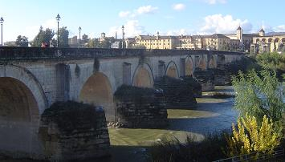
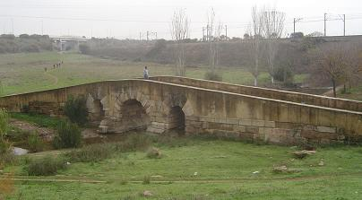

|
De la ciudad romana conocemos dos
puentes. El puente sobre el río Baetis, Guadalquivir.
|
 |
El puente romano de Córdoba fue construido a
principios o mediados del siglo I; pero de su construcción original sólo
quedan los sillares y tal vez alguno de sus arcos, ya que por razones
militares, fueron alternativamente destruidos y reconstruidos.
El puente se erigió con dieciséis arcos soportados por estribos que defienden
tajamares de medio cilindro coronados por medios conos. Los únicos elementos
estructurales de interés arqueológico pueden ser los arcos 14 y 15. |
El puente sobre el arroyo Pedroche, esta situado en la item Corduba Emeritam,
a la salida de la ciudad. Es el mejor conservado de la provincia.
|
Su longitud es de unos 30-35
m. con una anchura, incluidos los pretiles, de 4.90 m. Su altura en la
clave del arco central se aproxima a los 7 m. Tiene tres arcos con tablero
a doble vertiente. Conserva casi toda la estructura romana; pilas,
estribo...En época árabe registro reformas en las dovelas de los arcos
menores. Por su estructura y documentación epigráfica de dicha vía
vinculan su construcción en torno al 27 a.e.c. El Aqua Nova Domitiana Augusta, construida entre los
años 81 y 96, atravesaba este puente.
Situado al Noroeste de Córdoba, a pocos metros al sur de la Carretera de Almadén
(Nacional 432) y al Norte de la línea férrea Córdoba-Andújar, a 2,8 km de
Córdoba. |

|
Otro puente de la provincia es el
puente Mocho sobre el Guadalmellato. En la vía Augusta en la mansio ad decumo,
décima milla. Es un puente de diez arcos y rasante plana, datado en época de
Augusto por su aliviadero.
|